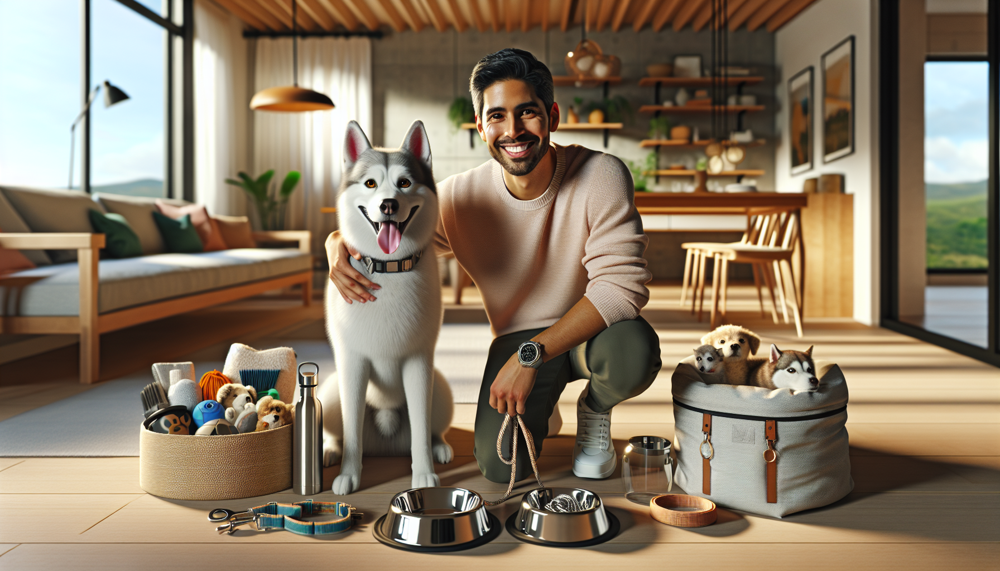

Every dog owner knows that life with a pup is equal parts adorable, messy, exciting, and unforgettable. From morning walks and road trips to cuddle sessions on the couch, the right accessories can make everyday life easier for both you and your dog. Whether you are a brand-new puppy parent, a seasoned dog lover, or someone searching for the perfect gift for a pet owner, having the right essentials on hand makes a huge difference.
Dog accessories are not just about style, although we absolutely love a cute personalized touch. The best accessories help with safety, comfort, training, hygiene, and convenience. They can turn a chaotic walk into a calm one, make travel smoother, and help your dog feel secure and cared for at home and on the go.
In this guide, we are sharing the top 10 accessories every dog owner needs, along with practical tips for choosing the best ones. If you want to build a thoughtful dog care toolkit or find a gift that any pet parent will actually use, this list is a great place to start.
If there is one absolute must-have for every dog, it is a well-fitting collar paired with a clear ID tag. A collar is one of the most basic accessories, but it is also one of the most important. It helps identify your dog quickly and gives you a secure place to attach tags and leashes.
Personalized ID tags are especially essential. Even indoor dogs can slip out through an open door or gate in an instant. A tag with your dog’s name and your contact information can help them get home safely and faster. Many dog owners also love personalized collars because they combine safety with style.
Walks are one of the best parts of dog ownership, and a reliable leash is non-negotiable. Whether you are doing a quick potty break, a neighborhood stroll, or an outdoor adventure, the right leash gives you control while helping your dog stay safe.
Standard leashes are often a great choice for daily use because they offer consistency and better handling. Many dog owners prefer a leash with a comfortable grip and strong hardware that can hold up to regular wear. If you have a larger dog or an energetic puller, durability matters even more.
Look for a leash that suits your dog’s size, walking habits, and your own comfort. A quality leash may seem simple, but it is one of those everyday accessories you will use constantly.
For many dogs, a harness is a game changer. Harnesses can provide better control during walks while reducing pressure on the neck. This makes them especially helpful for puppies, small breeds, senior dogs, and dogs that tend to pull.
A good harness can improve comfort and make walks more enjoyable. Some styles are designed for training, while others are ideal for casual daily wear. The best choice depends on your dog’s body shape, behavior, and activity level.
If your dog gets overly excited on walks or tends to lunge, a properly fitted harness can help create a safer and more manageable walking experience. It is also a thoughtful gift idea for new dog owners who are still building their pet essentials collection.
Every dog needs dependable food and water bowls, but not all bowls are created equal. The best bowls are sturdy, easy to clean, and sized appropriately for your dog. Stainless steel bowls are especially popular because they are durable and simple to sanitize.
For pet owners who love convenience, elevated feeders, non-slip bases, and travel-friendly collapsible bowls can all be useful options. If you spend time outdoors with your dog, a portable water bowl is one of those accessories you will be very glad to have.
Hydration is incredibly important, especially during warm weather and active outings. Keeping a dedicated travel bowl in your car, bag, or stroller can make it much easier to care for your dog while you are out and about.
Dogs need a comfortable place to rest, and a cozy bed gives them a dedicated space to relax, recharge, and feel secure. While some pups will happily nap almost anywhere, having a supportive dog bed can improve comfort and create a calming routine.
The right bed depends on your dog’s size, age, and sleeping style. Some dogs love to curl up in donut-style beds, while others stretch out and need more room. Older dogs may benefit from orthopedic support, and puppies may do best with something soft and washable.
A dog bed is also helpful for keeping fur and dirt contained to one comfortable spot instead of every blanket and couch cushion in the house. It is practical, comforting, and one of the most appreciated accessories you can get for a dog.
A bored dog can quickly become a destructive dog, which is why toys and enrichment accessories deserve a top spot on this list. Dogs need mental stimulation just as much as physical exercise. Toys help satisfy natural instincts like chewing, chasing, sniffing, and problem-solving.
A balanced toy collection might include chew toys, plush toys, fetch toys, and puzzle toys. Rotating toys can help keep them interesting and exciting. Interactive enrichment accessories are especially useful for rainy days, busy work-from-home afternoons, or dogs with lots of energy.
Not only do toys reduce boredom, but they also strengthen your bond with your dog. Playtime is one of the easiest ways to connect, train, and create happy memories together.
Even if your dog visits a professional groomer, having basic grooming tools at home is a must. Regular brushing helps reduce shedding, keeps coats healthy, and gives you a chance to check for skin issues, tangles, or anything unusual.
At minimum, most dog owners benefit from having a brush or comb suited to their dog’s coat type, nail clippers or a grinder, pet-safe shampoo, and grooming wipes for quick cleanups. Long-haired breeds may need more frequent brushing, while short-haired dogs still benefit from regular coat care.
Grooming is about more than appearances. It supports comfort, cleanliness, and overall wellness. Plus, getting your dog used to grooming tools early can make vet visits and grooming appointments much less stressful.
It may not be glamorous, but cleanup gear is one of the most practical categories of dog accessories. A waste bag holder attached to your leash means you are always prepared on walks. It is a small item that solves a very common problem.
Many dog owners also keep odor-control bags, pet-safe cleaning spray, and washable mats or towels on hand for accidents, muddy paws, or post-park messes. Being prepared for cleanup keeps your home, car, and daily routine much more manageable.
For gift shoppers, a cute waste bag holder paired with other walk-time accessories can make a surprisingly thoughtful and useful present.
Training goes much more smoothly when rewards are easy to access. A treat pouch is one of those accessories that many dog owners do not realize they need until they start using one. Once you have one, it becomes part of your everyday routine.
Treat pouches are great for obedience training, leash manners, recall practice, and reinforcing good behavior during walks. They save you from fumbling through pockets and help keep treats fresh and ready to go.
If you are working with a puppy or an energetic adult dog, a treat pouch can make your training sessions feel more natural and efficient. It is simple, practical, and incredibly helpful.
If your dog joins you for errands, vacations, park visits, or weekend adventures, travel accessories are a must. A portable water bottle, car seat cover, travel bed, or pet safety restraint can make outings safer and more comfortable for everyone.
Travel gear helps reduce stress and keeps essentials organized when you are away from home. Even short trips can go more smoothly when you have the basics packed and ready. For active pet owners, travel accessories are not extras at all. They are part of a smart routine.
Consider building a grab-and-go dog bag with water, treats, a collapsible bowl, waste bags, and a towel. It is one of the easiest ways to stay prepared for spontaneous adventures.
When shopping for dog accessories, think about your dog’s size, age, activity level, and personality. A tiny senior dog and a high-energy young retriever will have very different needs. Quality matters, especially for items you use every day like collars, leashes, bowls, and beds.
It is also worth choosing accessories that reflect your style and make daily routines feel more joyful. Personalized pet products are especially meaningful because they combine function with personality. They also make fantastic gifts for birthdays, holidays, new puppy celebrations, and dog adoption milestones.
The best dog accessories make life safer, cleaner, more comfortable, and a lot more fun. From personalized ID tags and dependable leashes to cozy beds, grooming tools, and travel gear, these essentials help you care for your dog with confidence and love. Whether you are building your own must-have collection or shopping for a fellow dog lover, these top 10 accessories are practical picks that truly make a difference.
If you are ready to add a special touch to your dog’s everyday essentials, shop personalized pet products at SnoutAndAbout on Etsy.